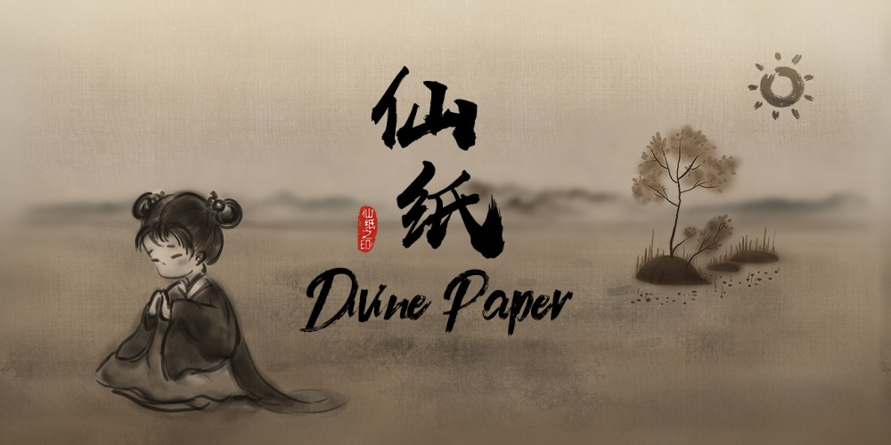
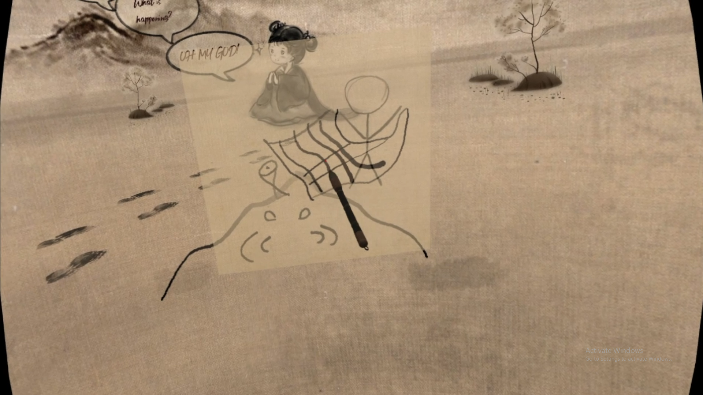
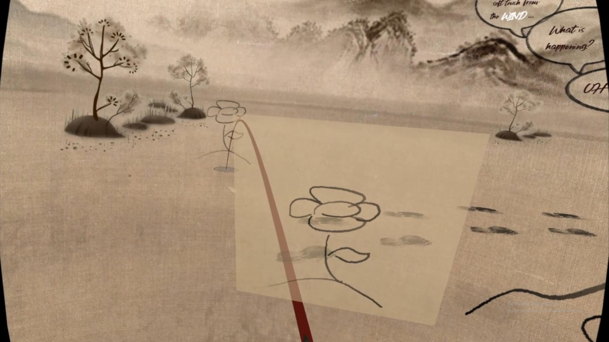
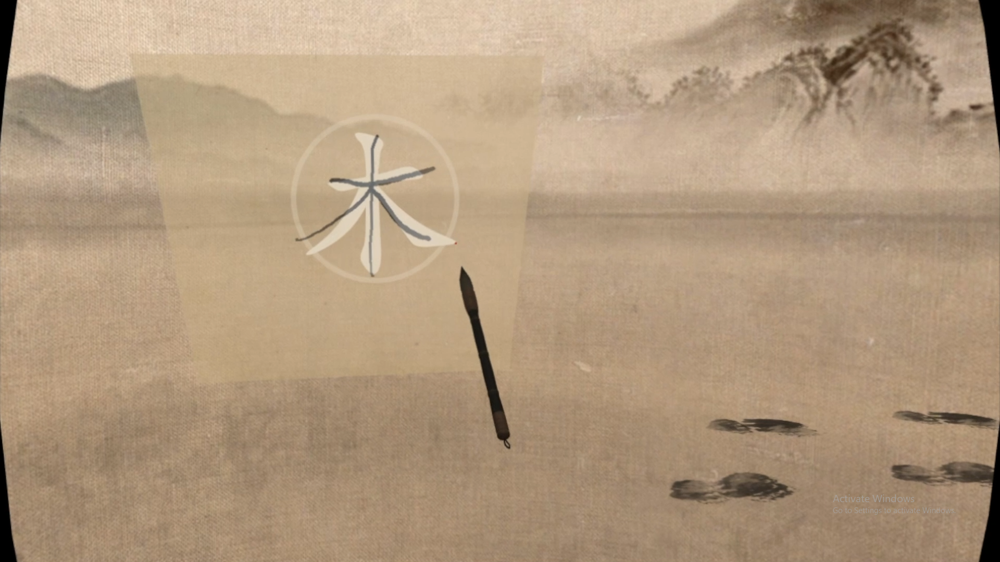
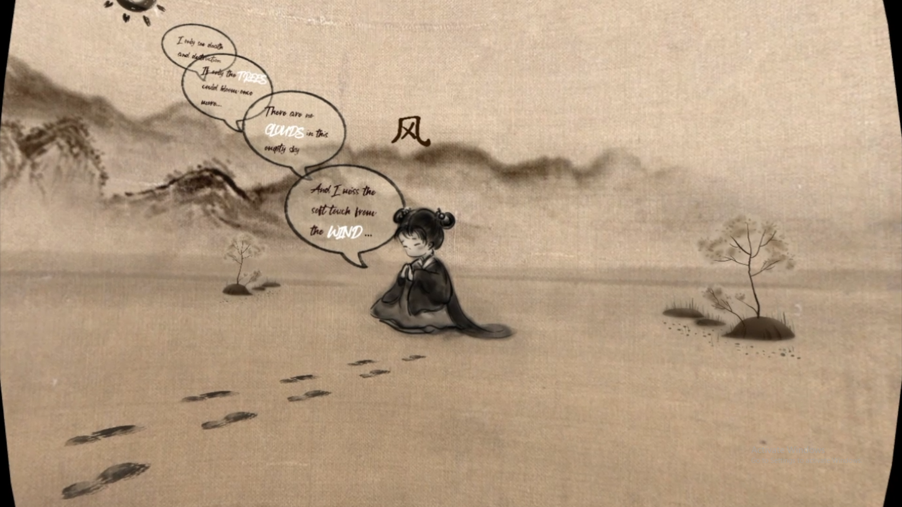
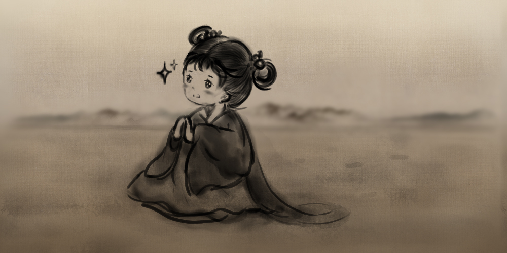
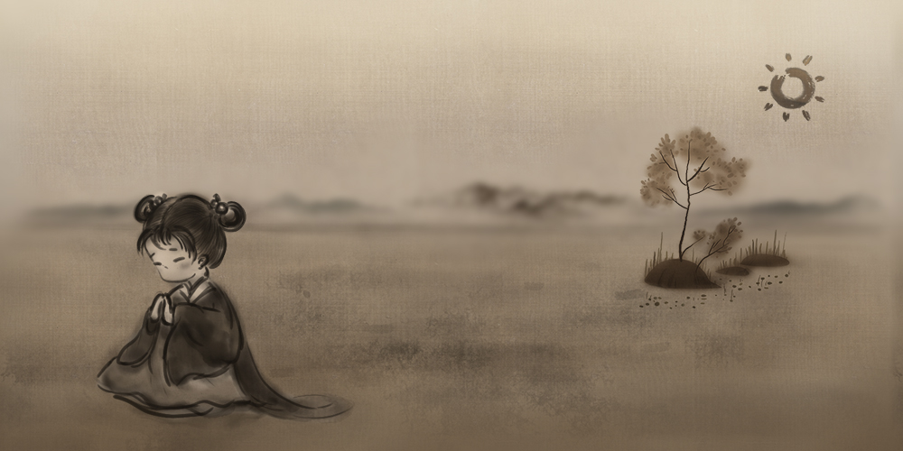

Divine Paper · 仙纸
UBC / Centre for Digital Media · Master's Project · 2019

Immersive VR interactive story set in a Chinese ink-style world. The player, cast as a god, translates written characters into their real-world counterparts.







